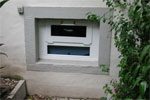
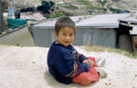
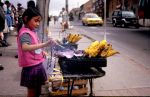
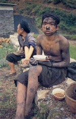

|
Anhaltende Menschenrechtsverletzungen vor den Wahlen in Kolumbien
terre des hommes fordert Aussetzen staatlicher Entwicklungszusammenarbeit |
Angesichts anhaltender Menschenrechtsverletzungen in Kolumbien fordert das entwicklungspolitische Kinderhilfswerk terre des hommes das Aussetzen der deutschen Entwicklungszusammenarbeit mit dem südamerikanischen Land. »Unsere Partner berichten uns fast täglich von Massakern an Bauern und Vertreibungen ganzer Dorfgemeinschaften, die von Paramilitärs mit Duldung von Regierung oder Großgrundbesitzern verübt werden. Wir fordern die Bundesregierung daher auf, die Zusammenarbeit mit der kolumbianischen Regierung auszusetzen und Hilfe bis auf weiteres nur über private Hilfsorganisationen abzuwickeln. Die Wiederaufnahme der Entwicklungszusammenarbeit mit staatlichen Stellen soll an die Einhaltung der Menschenrechte in Kolumbien gekoppelt werden«, erklärte Wolf-Christian Ramm, Pressesprecher von terre des hommes.
»Der am Wochenende zur Wiederwahl stehende Präsident Uribe hat das Land gespalten«, so Peter Strack, Pressereferent von terre des hommes. »Unsere kolumbianischen Partner, die sich für die Vertriebenen und für Frauen und Jugendliche aus den bedrohten Gemeinschaften einsetzen, fürchten die Wiederwahl Uribes und damit weitere vier Jahre Repression und Sozialabbau. Denn das ist es, was die Regierung Uribe unter Meinungsfreiheit und der Lösung der Pobleme des Landes versteht.« Nach Informationen von terre des hommes wurden erst kürzlich angeblich demobilisierte Paramilitärs wieder bewaffnet. Allein seit Anfang 2005 wurden über 250.000 Menschen aus ihrer Heimat vertrieben, um die Gebiete unter militärische Kontrolle zu stellen. Seit dem Amtsantritt von Präsident Uribe wurden über 300 Gewerkschafter und fast 50 Menschenrechts-Aktivisten ermordet.
|
Trotz Babyklappe und anonymer Geburt: Gleich bleibend hohe Anzahl getöteter oder ausgesetzter Neugeborener |
Tötungen oder Aussetzungen von Neugeborenen sind in Deutschland auch im Jahr 2005 nicht entscheidend zurückgegangen. Im ersten Drittel des laufenden Jahres (Januar bis April) wurden bereits elf tote Säuglinge und vier lebend ausgesetzte Neugeborene registriert. Diese Zahlen veröffentlichte das entwicklungspolitische Kinderhilfswerk terre des hommes auf Grund eigener Recherchen.
"Wir sind auf Grund dieser Zahlen außerordentlich alarmiert", erklärte Dr. Bernd Wacker, Adoptionsexperte von terre des hommes. Es zeige sich erneut, dass Mütter, die ihre Kinder töteten oder aussetzten, vom Angebot der Babyklappe und der anonymen Geburt nicht erreicht würden, auch dann nicht, wenn Klappen und anonym entbindende Kliniken in nächster Nähe zu finden wären. "Diese Angebote", so Wacker, "tragen zur Rettung von Kinderleben nichts bei!" Vielmehr erweckten sie den fatalen Eindruck, dass jeder das Recht habe, sein Baby bei Bedarf anonym in Klappe oder Krankenhaus zurückzulassen. Niemand wisse, wie viele Neugeborene in Deutschland auf diese Weise Jahr für Jahr künstlich zu Findelkindern gemacht würden.
"Natürlich gibt es kein Patentrezept zur Verhinderung der Tötung oder Aussetzung von Neugeborenen", so Bernd Wacker. Es müsse daher alles getan werden, um die bestehenden Angebote des deutschen Jugendhilfesystems zu stärken und bekannter zu machen. Nach wie vor gebe es in Deutschland viele Menschen, die von Hilfseinrichtungen für Mütter und Schwangere nichts wüssten.
Die von terre des hommes vorgestellten Zahlen basieren auf einer bundesweiten Auswertung von Medienberichten über die Aussetzung und Tötung von Neugeborenen. Es handelt sich dabei um sichere Mindestzahlen.
Tötungen bzw. Aussetzungen von Neugeborenen im Vergleich der Jahre 1999 - 2006 (April)
| |
1999 |
2000 |
2001 |
2002 |
2003 |
2004 |
2005 |
2006 |
| Tötungen / Aussetzungen zu Tode |
21 |
17 |
17 |
20 |
31 |
19 |
20 |
11 |
| Lebend-Aussetzungen |
13 |
11 |
14 |
14 |
12 |
14 |
9 |
4 |
| unklar |
- |
4 |
- |
- |
- |
- |
|
|
| Summe |
34 |
32 |
31 |
34 |
43 |
33 |
29 |
15 |
|
Internationaler Schutz für intern Vertriebene nur unzureichend |
In mindestens 40 Ländern der Erde sind Menschen innerhalb ihres Landes auf der Flucht. Sie werden aus ihren Dörfern verjagt oder fliehen aus Furcht vor Misshandlung und Tod. Diese Menschen werden als intern Vertriebene bezeichnet. Ihre Zahl wird auf etwa 25 Millionen Menschen geschätzt. Knapp drei Viertel der Opfer interner Vertreibung sind Frauen und Kinder. Kennzeichnend für intern Vertriebene ist, dass sie keine internationale Grenze überschreiten. Für sie gibt es kaum völkerrechtliche Schutzmechanismen. Auf diesen Missstand macht das Kinderhilfswerk terre des hommes mit seiner neuen Studie »Vertreibung von Kindern verhindern!« aufmerksam.
»Die Begriffe Flüchtlinge und Vertriebene werden oft synonym verwendet. Dabei sind die rechtlichen Rahmenbedingungen sehr unterschiedlich«, erklärt Andreas Rister, Referent für Kinderrechte bei terre des hommes: »Ein Mensch wird zum Flüchtling, wenn er eine internationale Grenze überquert. Dann gilt die Genfer Flüchtlingskonvention, und er kann mit Hilfe des Flüchtlingskommissariates der Vereinten Nationen (UNHCR) rechnen. Doch für intern Vertriebene existiert keine internationale Schutzkonvention.« Die jetzigen Regelungen seien in dieser Hinsicht nicht ausreichend, gewaltsame Vertreibung völkerrechtlich nicht klar und eindeutig verboten. »Unser wichtigster Appell richtet sich deshalb an die Staatengemeinschaft«, so Andreas Rister weiter. »Es muss ein ausdrückliches Menschenrecht auf Schutz vor Vertreibung geben! Die Opfer müssen geschützt, die Täter betraft werden. Wir fordern die Bundesregierung und das Parlament auf, eine entsprechende Initiative zu ergreifen.«
Zentrales Hindernis für internationale Hilfe ist das Prinzip der staatlichen Souveränität: Viele Regierungen betrachten ausländisches Engagement als Einmischung in ihre inneren Angelegenheit. Auch UN-Organisationen bleiben außen vor und können den intern Vertriebenen nicht helfen. In vielen Ländern werden Vertreibungen von den Regierungen nicht nur zugelassen oder hingenommen. In Kolumbien beispielsweise erhalten Täter staatlichen Schutz und können geraubte Güter und Land wie legal erworbenes Eigentum behalten. Dort versucht terre des hommes – gemeinsam mit kolumbianischen Menschenrechtsorganisationen – von Vertreibung bedrohten Kleinbauern beizustehen. |
terre des hommes kritisiert ILO-Weltbericht zu Kinderarbeit |
Das entwicklungspolitische Kinderhilfswerk terre des hommes begrüßt den neuen Bericht der Internationalen Arbeitsorganisation ILO über Kinderarbeit, hält einige Aussagen aber für zu optimistisch. »Von einem Durchbruch und dem tatsächlichen Ende ausbeuterischer Kinderarbeit würden wir erst sprechen, wenn tatsächlich alle Kinder der Welt zumindest in den Genuss von Grundbildung kämen, statt täglich zu schuften«, so Barbara Küppers, terre des hommes-Referentin für Kinderarbeit.
Nach Angaben der ILO ist die Zahl der Kinderarbeiter um elf Prozent auf 217 Millionen Kinder gesunken, Erfolge seien besonders im Kampf gegen die schlimmsten Formen der Ausbeutung, wie Sklaverei, Prostitution und gefährliche Arbeit, erreicht worden. In den letzten Jahren sei die Zahl ausgebeuteter Kinder von 170 Millionen auf 126 Millionen gesunken.
»Leider trifft der Bericht kaum Aussagen über die Ausbeutung von Kindern in den etwa 50 Regionen der Welt, in denen staatliche Strukturen kaum vorhanden sind«, so Küppers. In Kriegs- und Krisengebieten, sowie überall dort, wo weite Teile der Bevölkerung in großem Elend lebten, seien Kinder gegenüber jeglicher Form der Ausbeutung besonders schutzlos.
terre des hommes begrüßt den deutlichen Hinweis der ILO, dass Hilfsprogramme zwar punktuell helfen könnten, für den Erfolg im Kampf gegen ausbeuterische Kinderarbeit allerdings politische Entscheidungen maßgeblich seien. Dies betreffe insbesondere die Durchsetzung des Rechts auf Grundbildung für alle Kinder weltweit und die Forderung nach menschenwürdiger Beschäftigung für Jugendliche.
»Wir wünschen uns von der ILO stärkere Kooperation mit den vielen nationalen und internationalen Bürgerbewegungen gegen die Ausbeutung von Kindern und eine stärkere Beteiligung von Kindern und Jugendlichen selbst«, so Küppers. »Wir hoffen, dass die internationale Gemeinschaft die ILO in ihrem Einsatz stärkt.« Besonders Unternehmen und Wirtschaftsverbände könnten wesentlich mehr zur Verwirklichung des Menschenrechts auf Schutz vor Ausbeutung beitragen. |
Über zwölf Millionen Menschen unterliegen Zwangsarbeit |
Weltweit unterliegen derzeit rund 12,3 Millionen Menschen der Sklaverei. Die Hälfte von ihnen sind Kinder und Jugendliche. Zwangsarbeit, Schuldknechtschaft und Menschenhandel ermöglichen skrupellosen Geschäftemachern internationalen Schätzungen zufolge einen jährlichen Profit von über 40 Milliarden US-Dollar. Dies erklärte das entwicklungspolitische Kinderhilfswerk terre des hommes anlässlich des Tages der Arbeit am 1. Mai.
Die meisten Zwangsarbeiter leben in Asien und hier insbesondere in Indien, Bangladesh und Pakistan. Dort zwingt die weit verbreitete Schuldknechtschaft häufig ganze Familien über Generationen in die Abhängigkeit von Unternehmern, Großgrundbesitzern oder Geldverleihern. Kinder und Erwachsene schuften unter katastrophalen Bedingungen in der Landwirtschaft, in Steinbrüchen und Haushalten. In fast allen Ländern der Welt sind Zwangsarbeit und Sklaverei verboten. Dennoch sind in einigen Staaten wie zum Beispiel Burma Regierung und Militär oft selbst an der Ausbeutung von Menschen beteiligt.
"Die Durchsetzung von Verboten und der konsequente Schutz der Opfer scheitern oft an den politischen Kräfteverhältnissen, an Korruption und mangelndem Willen, wirksame Systeme der Arbeitsinspektion aufzubauen", erklärte Wolf-Christian Ramm, Pressesprecher von terre des hommes. "Wir unterstützen deshalb zum Beispiel in Indien Menschenrechtsorganisationen, die Opfer aus der Schuldknechtschaft befreien und ihnen durch Rechtshilfe und Ausbildung eine menschenwürdige Zukunft ermöglichen."
Nach Angaben der Internationalen Arbeitsorganisation (ILO) leben auch in den Industriestaaten etwa 360.000 Menschen unter sklavenähnlichen Bedingungen. In Deutschland sollen etwa 15.000 Menschen unter Zwang zu unwürdigen Bedingungen und ohne Entlohnung arbeiten. Sie sind Opfer von Menschenhandel und arbeiten zum Beispiel in der Prostitution, auf dem Bau, in der Landwirtschaft und in Haushalten.
|
|
|
|
 Ansprechpartner Ansprechpartner
|
|
Wolfgang Deppisch
(Projektinfos)
Tel. 07222 / 32927
Heinz Wolf
(Sponsoring, Allgemeines)
Tel. 07225 / 75543
weitere Ansprechpartner
|
|
Erlöse
1992-2012
|
|

Jahr |
Euro |
1992 |
70.000 |
1993 |
75.600 |
1994 |
83.883 |
1995 |
69.617 |
1996 |
51.412 |
1997 |
61.749 |
1998 |
60.333 |
1999 |
68.742 |
2000 |
85.492 |
2001 |
106.375 |
2002 |
78.937 |
2003 |
84.027 |
2004 |
76.662 |
2005 |
149.941 |
2006 |
84.497 |
2007 |
105.958 |
2008 |
104.053 |
2009 |
100.833 |
2010 |
107.254 |
2011 |
103.600 |
| 2012 |
158.250 |
| 2013 |
163.420 |
1977-2013 |
mehr als 2,7 Mio. € |
|
Detailansicht der Erlöszahlen |
|
|


;)